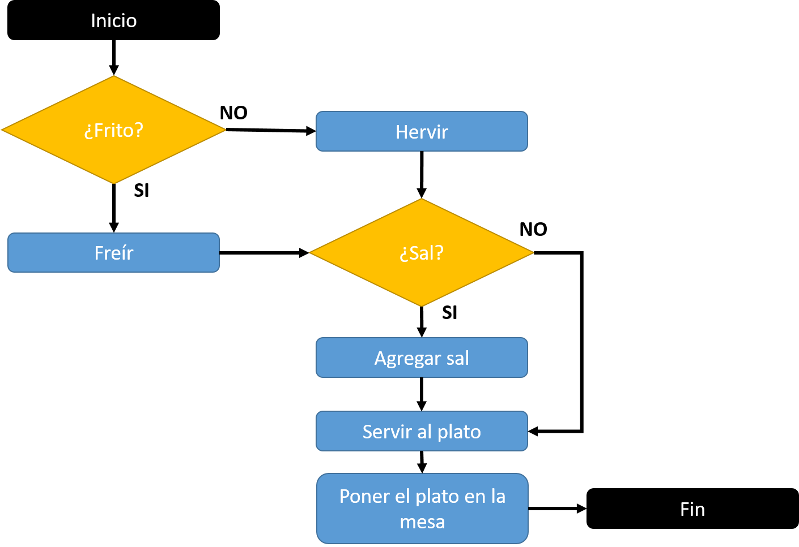

¿Que es un algoritmo?
Se puede entender un algoritmo como una secuencia de pasos finitos bien definidos que resuelven un problema. Por ejemplo, la ejecución de tareas cotidianas tan simples como cepillarse los dientes, lavarse las manos o seguir el manual de instrucciones de armado de un mueble, se pueden ver como un algoritmo.
Ejemplo de un algoritmo

Pasos / componentes
Inicio.
Este inicio es la entrada al algoritmo en si,
podria ser donde se obtienen los datos para que inicie.
Proceso
El proceso es lo que va a pasar con esos datos,
que va a suceder con estos y que haras con eso datos. Aqui es donde van los ciclos o bucles, donde van las condiciones o decisiones, variables, pueden ir otros metodos (o algoritmos -> un algoritmo puede contener otro algoritmo en si)
Fin
Una vez el proceso termina, el fin es el resultado,
los datos que se obtubieron en el inicio pasaron por un proceso y terminaron con un resultado, si los datos fueron 2 y 2, el proceso la sum a(poner el signo de mas entre estos. el fin seria el resultado de sumar estos datos
Actividad
Escoge uno de estos temas y crea un algoritmo:
- Ir al trabajo
- Visitar la tumba de el rey Alfred
- Visitar al papa
- Comprar un pantalon usado
- Inscribirse en la universidad
- Dejar de tomar alchol
- Empezar un negocio
- Visitar la muralla china
- Hablar sobre obi-wan Kenobi
- multiplicar 2 numeros
- Tender la cama
- Tomar un vaso de agua
- Fregar
- Cocinar arroz
Estructurada
Es la secuencia o sucesion de dos o mas operaciones. Sucede una detras de la otra. incluye la utilidad de subrutinas y subfunciones.
Imperactiva
Emplea funciones para modificar un estado de un algoritmo o programa. Controla una maquina o mecanismo que ayuda a producir el resultado deseado. Un usuario expresa lo que quiere, y una maquina de manera imperactiva produce ese resultado
Funcional
Como su nombre lo dice, todo es una funcion. Las variabls sirven para almacenar procedimientos o funciones. Para cualquier cosa existe una funcion o metodo.
POO
La mas importante de todas, pues es la usada hoy dia, todo es un objeto. La capacidad de tomar el mundo real, y llevarlo a codigo. Usamos clases, que son objetos, comportamientos que son metodos, atributos que son variables. Una clase carro, tiene un motor de un x comportamiento, su atributo, el color de ese carro.
Bajo nivel
Lenguaje muy complicado, solo te interesa saber que es la antigua forma de programar. Era puro numeros y letras. No se entendia. Este fue el lenguaje que hizo creer a Las personas que programar era para cientificos.
Alto nivel
Lenguaje usados por la insdustria hoy en dia, mas entendible al lenguaje humano, mas llanos. Pueden ser compilados o interpretados.